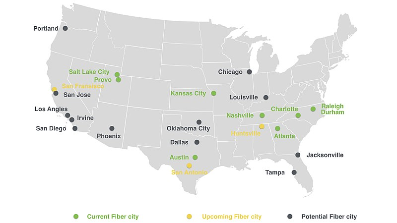

In 2010, Google announced it's intention to begin testing a service called Google Fiber, an internet service that provided speeds never before seen for the general populus. In order to choose which community would get Fiber first, Google allowed communities to apply and Google would choose the winner or winners later that year. After receiving over 1,100 applications, Google pushed back the selection until early 2011.
In 2011, Google held a trial in a small community in Palo Alto, CA before announcing that Kansas City, Kansas would be the first community to revceive Fiber on March 30. When they had chosen Kansas City as the winner of the selection process, they noticed that the more affluent communities within KC were signed up for faster internet, but not the pooer neighborhoods, not even for the free service. In response, Google sent a team of 60 people to go to these communities and promote Fiber. Google even offered grants to organization within the community to start up digital literacy programs in KC.
After a couple of months, Google announced that it would include Kansas City, Missouri, offering the service on both sides of the state line. The service would be up and running in late 2012. Over the next year, Google would provide the service to numerous cities nearby KC. In addition to spreading the service around the KC area, Google announced in April of 2013 that Austin, Texas would become another city that would be provided Fiber. Only a few days later, Google announced that Provo, Utah would also become a "Fiber City." During the next couple of years, Google would announce many other cities would be provided Fiber: Salt Lake City, Charlotte, Atlanta, Nashville, and the Research Triangle (Raleigh-Durham).
In the next year after the expansion to these cities, Google had announced more cities that would be provided Fiber. Those cities being Long Beach and Huntington Beach in Southern California, San Antonio, and Huntsville, Alabama. Google had tweeted throughout the year that Google was in ongoing negotiations with many cities. From San Diego, to Tampa, and even Oklahoma City.

| Google Fiber Speed and Price Compared to Competition | |||
|---|---|---|---|
| Speed | Price (per month) | Data Cap | |
| 1 GB/s (1000 MB/s) | $170 + $100 upfront (Internet, TV, Phone) | unlimited | |
| Xfinity | 2 GB/s (2000 MB/s) | $299.95 + $1,000 upfront (Internet) | unlimited |
| AT&T | 1 GB/s (1000 MB/s) | $144 + $99.99 upfront (Internet, DIRECTV, Phone) | unlimited |
| CenturyLink | 1 GB/s (1000 MB/s) | $140 + $60 upfront (Internet, DIRECTV, Phone) | 1 TB (1000 GB) |
Wikipedia: Google Fiber
Title: Ultra high-speed broadband is coming to Kansas City, Kansas
Title: Google Fiber Is More Important Than You May Think